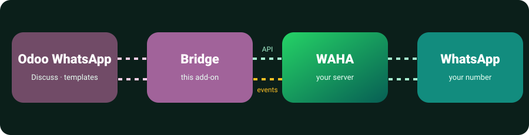

| Through the Bridge (WAHA) | Meta Cloud API | |
|---|---|---|
| First message | Free text | Approved template |
| After 24 h of silence | Free text | Template again |
| Fees | None | Per conversation |
| Number | Your existing WhatsApp number | Dedicated API number |
| Status | Unofficial protocol: no bulk campaigns | Official |
يجعل تطبيق واتساب الأصلي في أودو Enterprise (المناقشة، القوالب، السجل) يعمل عبر جلسة WAHA بدلًا من واجهة ميتا.
الإرسال: رسائل حرة لأي رقم في أي وقت بدون قالب وبدون نافذة 24 ساعة، القوالب المعتمدة تعمل وتُرسل كنص مع مرفق الترويسة، صور وفيديو وصوت ومستندات، والرد على رسالة يصل كرد حقيقي في واتساب. شاشة "دردشة جديدة" لمراسلة أي رقم، وإرسال نص حر من أي سجل حتى 20 مستلمًا.
الاستقبال: الرسائل والوسائط والمواقع وجهات الاتصال تصل في محادثة المناقشة الصحيحة فورًا، مع التفاعلات وعلامات التسليم والقراءة. الردود التي تكتبها من الهاتف أو واتساب ويب تظهر أيضًا في المناقشة بدون إرسالها مرة ثانية.
الأمان: يعمل لكل جلسة على حدة، وحسابات ميتا الأخرى لا تتأثر، والمجموعات تبقى في تطبيق Elblasy WhatsApp.
التفعيل: اربط رقمك في الجلسة بالـ QR ثم اضغط "Enable Odoo WhatsApp".